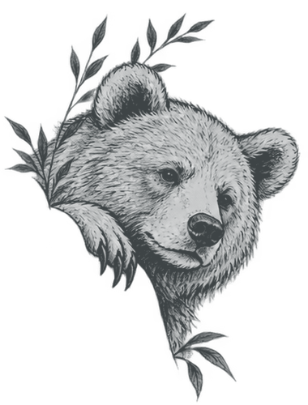
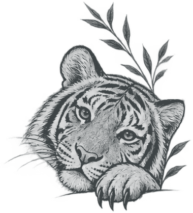

Cameron Afradi
Ph.D. student in Electrical and Computer Engineering
Princeton University
B.S., Electrical Engineering & Computer Sciences, UC Berkeley
Research: Solid-state AMO quantum systems
Email: [add your email]
GitHub · [CV PDF] · [Google Scholar] · [ORCID]
About me
I am interested in using solid-state atomic, molecular, and optical (AMO) quantum systems to build new technologies and investigate fundamental physics. My research follows two related directions: scaling quantum information systems and probing fundamental physics with precision quantum measurements.
Research
Scaling quantum information systems
How can we go from controlling individual quantum devices to operating larger, reliable quantum systems? I have approached this question through solid-state spin–photon interfaces, integrated photonics, and quantum computer architectures.
- SiV centers in diamond (MITRE). Photonic integrated circuit design and simulation for solid-state quantum interfaces.
- T centers in silicon (UC Berkeley). Quantum-optical characterization, experimental hardware, and photonic device integration.
- Modular quantum computing (EPFL). Lattice-surgery-aware mapping, scheduling, and resource analysis for fault-tolerant architectures.
Probing fundamental physics
Well-controlled quantum systems can also serve as sensitive instruments for testing fundamental symmetries. My work in this area focuses on coherent control and precision measurements in solid-state systems.
- Eu:YSO. Exploring europium-doped yttrium orthosilicate for precision spectroscopy and measurements sensitive to possible time-reversal-symmetry-violating effects.
Publications
Education
- Ph.D., Electrical and Computer Engineering, Princeton University (in progress).
- B.S., Electrical Engineering & Computer Sciences, University of California, Berkeley.
Research experience
- Princeton University — solid-state AMO quantum systems and precision measurement.
- École Polytechnique Fédérale de Lausanne (EPFL) — Advanced Quantum Architecture Laboratory (2025).
- UC Berkeley — Quantum Devices Group.
- MITRE / MIT / Sandia — Quantum Moonshot (2023).
Contact
Email: [add your email] · GitHub · [add CV and Google Scholar links]